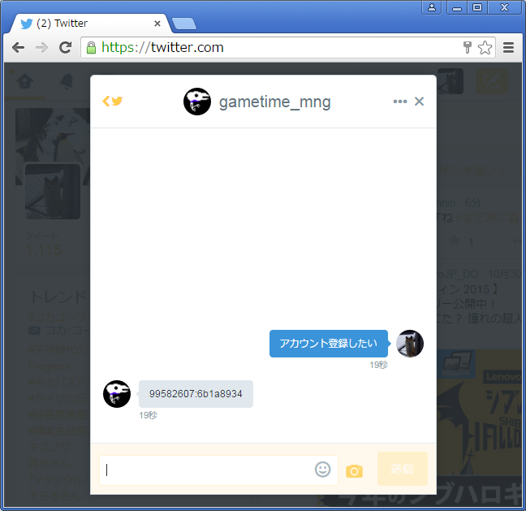

ついたて将棋道場 ヘルプ
ついたて将棋のルール
- 「ついたて将棋」は相手の駒が見えない将棋です。
- 王手無視等の反則手を10回指すと負けになります。
アカウントの登録
- twitterで gametime_mngにダイレクトメッセージを送ってください。（「ついたて将棋道場」管理用のアカウントです）
- 自動で登録処理が行われ、認証文字列が返信されます。
- パスワードを変えたい場合、画像、名前を再登録したい場合は再度ダイレクトメッセージを送ってください。

ついたて将棋道場の仕様
- 持ち時間は10分切れ負けです。
- 接続が一度でも切れると負けになります。（画面の更新も同様です）
- 現在テスト稼働中のため、予告なくサービスの停止、変更を行う場合があります。
- チャットの内容はサーバーに保存されません。
- 観戦中のチャットは、同一の対局を観戦中のユーザ間で共有されます。過去対局の再生時も同様です。
- アカウントによるログイン時も、ゲストアイコンを利用できます。
動作確認
- Microsoft Edge 25
- Google Chrome 50 (64-bit)
- FireFox 41
素材提供
バージョン情報
著作権
- 著作権は potalong_oreo が所有します。
- ブラウザで動作する「ついたて将棋道場」のプログラムは、商用での利用を除き、自由に改変、配布を行ってかまいません。
- ただし、このプログラムによって生じた損害に対して、著作権者は一切の責任を負いません。
Copyright (c) 2015 potalong_oreo All rights reserved